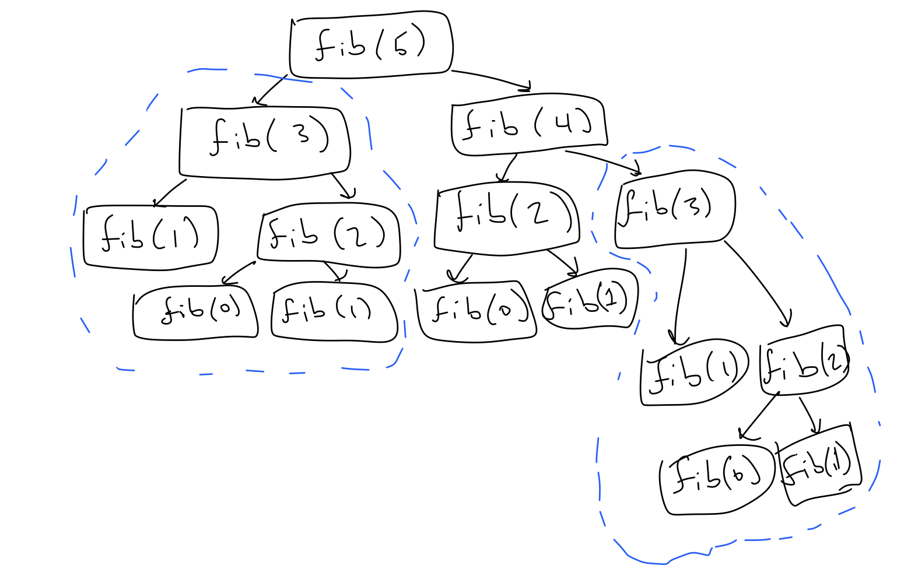

In our examples and assignments, we have seen a couple functions now that can be written both recursively and iteratively (i.e., using control flow). We can, in fact, write any function both recursively and iteratively, and we can support this somewhat formally by the fact that imperative languages like Swift and functional languages like Haskell both have the same computational expressivity. But in functional languages like Haskell, there is no iteration because there is no program state, no stored variables. This makes it unclear whether to use recursion or iteration. There is no right answer to this question, I personally think it comes down to which is more natural, but there are a couple non-aesthetic considerations we might want to keep in mind.
We can see the difference between the recursive and iterative versions of a function by examining the evolution of their environment diagrams. The key difference will be that recursive functions often maintain more live frames. Let's consider the factorial function again. It can be written in these two forms, one iterative and one recursive.
func factorialItr(_ n: Int) -> Int {
assert(n > 0)
var accum = 1
var count = 1
while count <= n {
accum *= count
count += 1
}
return accum
}
func factorialRec(_ n: Int) -> Int {
assert(n > 0)
if n == 1 { return 1 }
return n * factorialRec(n - 1)
}Now let's construct the diagram for factorialItr(4) and factorialRec(4), comparing how they develope. In the iterative version, each iteration of the while loop creates a WHILE frame which updates values in its parent frame and then is immediately labeled with DONE. Just before we reach the case that condition to the while loop is false there is only one live frame other than the global frame.
In the recursive version, the analogous place in the program is just after the recursive call factorialRec(1). At this point no frames are labeled DONE. So calling factorial(_:) on a positive integer \(n\) requires \(n\) live frames other than the global frame.
Even though we leave frames that are labeled DONE in our environment diagrams, the computer will get rid of these frames in the background, freeing up space to run the program. Formally, your computer maintains a call stack, which is a stack in the sense of the notes on structures, that keeps track of live frames associated with function calls. When a frame for a function call is labeled DONE, it is removed from the top of the stack (pop'd off the stack). When a function is called, a frame is added to the call stack (push'd onto the stack). For captured variables, certain frames with relevant information are stored elsewhere for later reference. Note: this is one place where our model of execution does not reflect what is actually happening in the computer. When we first started talking about models of execution we said that this is okay and, in some sense, necessary.
Keeping around a lot of live frames is computationally expensive, especially for function calls, which for various reasons are more complex than those for control flow statements. It also generally means less space to do other computations in the program. These problems won't appear with the factorial function because its outputs are so large. The number \(22!\) is already too large to store as an Int. However, we can test this phenomenon with a simple function that intentionally twiddles its thumbs, so to speak.
func twiddleItr(_ n: Int) -> Int {
assert(n >= 0)
var x = 0
for _ in 0..<n {
x += 1
x %= 2
}
return x
}
func twiddleRec(_ n: Int) -> Int {
assert(n >= 0)
if n == 0 { return 0 }
return (twiddleRec(n - 1) + 1) % 2
}We can run the iterative version of this function on very large inputs. But like the recursive version of factorial, the recursive version of this function has to maintains a large call stack. If we try twiddleRec(1000000) we get the error
illegal hardware instruction swift rec-vs-it.swift(the actual error might depend on your hardware). This error means that the computer ran out of space to maintain the call stack.
As final note, we have said that functional programming languages only have recursion, but they don't run into this problem. This only occurs because Swift has both iteration and recursion. The model of execution for functional languages is very different. It does not require frames, as there is no program state to maintain.
We return to another example which we brought up in the notes for recursion, namely the Fibonacci function. We showed that we can define this function recursively using tree recursion.
func fibItr(_ n: Int) -> Int {
assert(n >= 0)
var curr = 1
var prev = 0
for _ in 0..<n {
(curr, prev) = (curr + prev, curr)
}
return curr
}
func fibRec(_ n: Int) -> Int {
assert(n >= 0)
if n == 0 || n == 1 { return 1 }
return fibRec(n - 1) + fibRec(n - 2)
}But we also observed in those notes that the recursive version of this function repeats a lot of work.

fibIter(50) is almost instantaneous whereas fibRec(50) takes a couple minutes. This is unfortunate because the recursive definition is so elegant. This is going to be an issue of many tree recursive functions, and not all tree recursive functions are going to be as amenable to iteration as the Fibonacci numbers.
Fortunately, there is a general technique that we can use to speed up tree recursive functions called memoization or tabling. The idea is simple is principle: while we are recursing, we can save values we have already computed in a dictionary in the parent frame of the function, and then look up the values we have already computed when we need them again. The implementation is a bit complicated, but not unlike things we've already seen before.
func fibMem(_ n: Int) -> Int {
assert(n >= 0)
var fibTable = [Int: Int]()
fibTable[0] = 1
fibTable[1] = 1
func fibLookup(_ n: Int) -> Int {
if let alreadyComputedValue = fibTable[n] {
return alreadyComputedValue
}
fibTable[n - 1] = fibLookup(n - 1)
fibTable[n - 2] = fibLookup(n - 2)
return fibTable[n - 1]! + fibTable[n - 2]!
}
return fibLookup(n)
}We lose a bit of the elegance in the definition but the difference in running time with the iterative version is now negligible.
Again, I think the best practice for determining whether to use iteration or recursion to determine which is more natural. If something can be naturally cast as a process of repeated updates of values, then it might naturally be problem for iteration. Most of the problems we have seen so far are naturally iterative problems. But there are certain problems that are most naturally recursive functions, one of which is the classic making change problem: determine the numbers of ways to make change for a given value using a particular set of possible coins. We might, for example, be interested in the number of ways that we can make change for an American dollar with American currency versus the number of ways we can make change for a Canadian dollar with Canadian currency.
func makeChange(forAmount amount: Int, withCurrency currency: [Int]) -> Int {
for coin in currency {
assert(coin > 0)
}
if amount < 0 { return 0 }
if amount == 0 { return 1 }
if currency.isEmpty { return 0 }
return makeChange(forAmount: amount - currency[0], withCurrency: currency) +
makeChange(forAmount: amount, withCurrency: [Int](currency[1...]))
}Let's break this down into English.
Given some time, this will come to seem like a very natural recursive function, and a bit hard to reason about iteratively. In this case, I would usually say just write a recursive function. But as we have seen, there are some considerations that might lead us to want to write an iterative version of such a function. One way we can do this generally for any recursive function is to explicitly maintain the call stack. This also helps demonstrate a bit what is happening in your computer when you make a recursive call.
func makeChangeItr(forAmount amount: Int, withCurrency currency: [Int]) -> Int {
var callStack = Stack<(Int, [Int])>()
callStack.push((amount, currency))
var total = 0
while let (currAmount, currCurrency) = callStack.pop() {
if currAmount == 0 { total += 1 }
if currAmount > 0 && !currCurrency.isEmpty {
callStack.push((currAmount - currCurrency[0], currCurrency))
callStack.push((currAmount, [Int](currCurrency[1...])))
}
}
return total
}In this implementation we are performing the same operations, but instead of recursively calling the function, we are pushing the next inputs we want to compute to a stack. The while loop pops off the next set of inputs to consider.
When we actually run this, we find that this is actually slower than the recursive version. This won't always be the case, especially when the recursive calls are more complicated, but sometimes these things are mysteries. My best approximation to an answer for why this is: your computer is optimized to manage frames in call stack. It does its best when storing arrays, but it might not do it in the most optimal way. For complex recursive calls, this overhead might actually be worth it. This is an art, not a science.